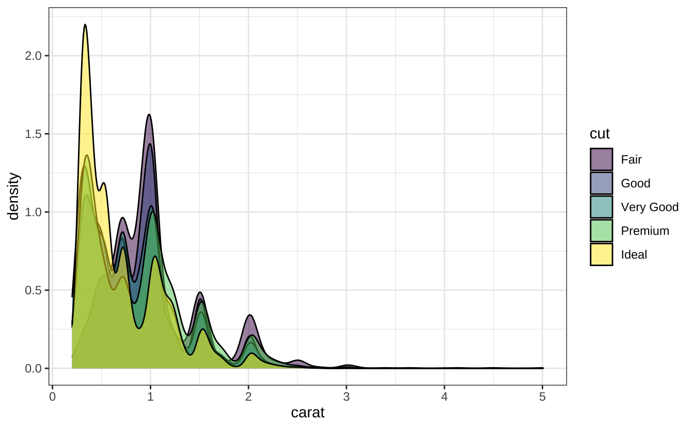
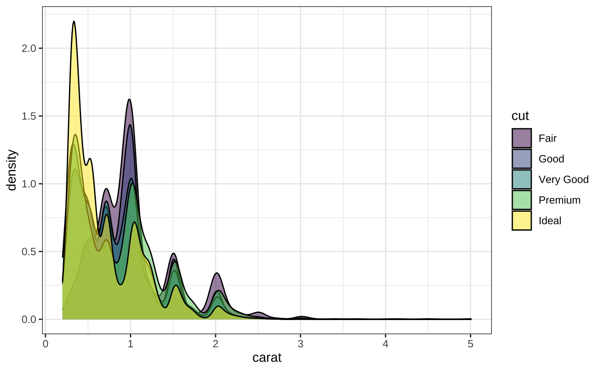
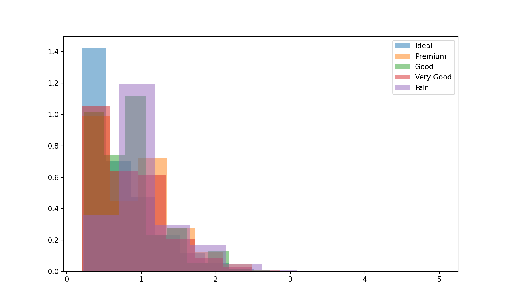
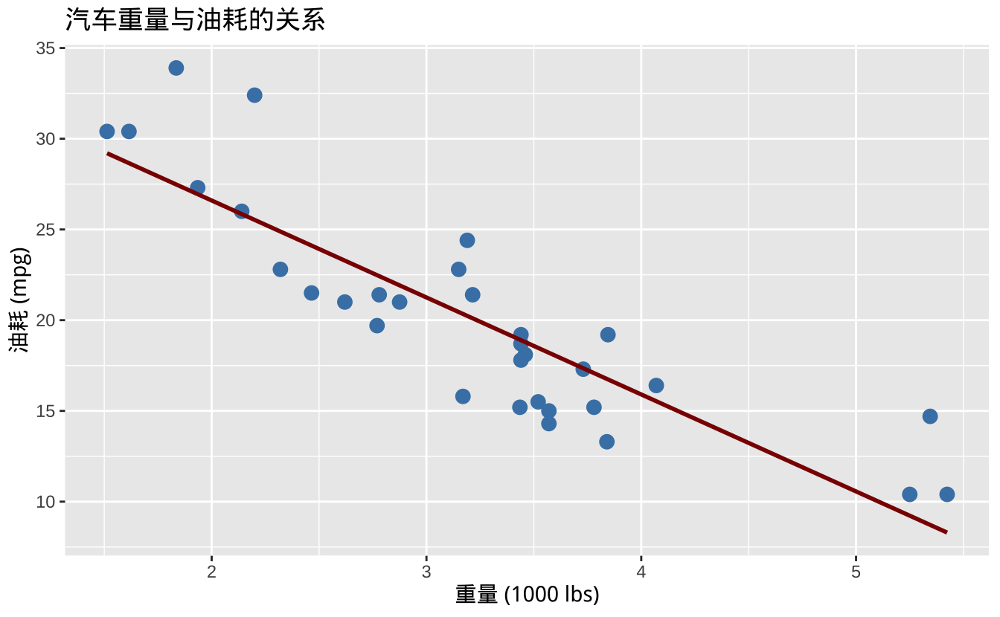

library(ggplot2)
# ggplot2 绘制密度图
ggplot(diamonds, aes(x=carat, fill=cut)) +
geom_density(alpha=0.5) +
theme_bw()
Python 和 R 在数据科学方面的应用都非常广泛。
| 功能 | Python | R |
|---|---|---|
| 基础操作 | Pandas（易用性高） | data.table（内存效率优化） |
| 并行计算 | Dask（分布式DataFrame） | future（异步计算框架） |
| 数据接口 | SQLAlchemy（多数据库支持） | DBI（统一数据库接口） |
| 功能 | Python | R |
|---|---|---|
| 静态图表 | Matplotlib（高度定制化） | ggplot2（图形语法，出版级输出）✅ |
| 交互可视化 | Plotly/Dash（Web整合） | plotly/shiny（动态仪表盘） |
| 统计图表 | Seaborn（简化统计绘图） | ggpubr（科研论文专用）🔬 |
场景案例：
library(ggplot2)
# ggplot2 绘制密度图
ggplot(diamonds, aes(x=carat, fill=cut)) +
geom_density(alpha=0.5) +
theme_bw()
# Matplotlib 等效实现
import matplotlib.pyplot as plt
import seaborn as sns
# 加载 diamonds 数据集
diamonds = sns.load_dataset("diamonds")
plt.figure(figsize=(10,6))
for cut_type in diamonds['cut'].unique():
subset = diamonds[diamonds['cut'] == cut_type]
plt.hist(subset['carat'], density=True, alpha=0.5, label=cut_type)
plt.legend()
plt.show()
| 功能 | Python | R |
|---|---|---|
| 传统模型 | Scikit-learn（统一API设计） | caret（一站式建模工具） |
| 深度学习 | PyTorch/TensorFlow（工业级框架）🏭 | keras（前端接口）/torch（扩展包） |
| 自动化 | AutoKeras（神经架构搜索） | autoML（基础自动化） |
性能基准：
- 随机森林训练（10万样本）：Python比R快2.3倍（源码测试）
- XGBoost GPU加速：Python支持CUDA直接调用，R需额外配置🔧
graph TD
A[Python核心] --> B[科学计算]
A --> C[机器学习]
A --> D[可视化]
B --> B1(NumPy/SciPy)
C --> C1(Scikit-learn)
C --> C2(TensorFlow)
D --> D1(Matplotlib)
D --> D2(Plotly)
graph TD
A[R核心] --> B[统计分析]
A --> C[数据操作]
A --> D[可视化]
B --> B1(lme4)
C --> C1(dplyr)
D --> D1(ggplot2)
D --> D2(lattice)
| 维度 | Python优势领域 | R优势领域 |
|---|---|---|
| 开发速度 | 深度学习原型开发 | 统计建模快速迭代 |
| 部署能力 | 生产环境微服务架构 | 学术报告动态生成 |
| 硬件支持 | 多GPU分布式训练 | 单机内存计算优化 |
| 学习曲线 | 通用编程思维易过渡 | 统计学家零门槛上手 |
决策树建议：
- 如果您的需求涉及：生产部署、深度学习、跨团队协作 → 选择Python 🐍
- 如果您的需求涉及：统计推断、学术出版、生物信息 → 选择R 📊
▶️ 混合架构方案：通过reticulate包在R中调用Python代码，或使用Plumber将R模型部署为API。
R 语言以其强大的统计分析能力和卓越的数据可视化功能而著称，已成为数据科学家、统计学家以及各领域研究者的首选工具。其独特的生态系统、丰富的开源包以及便捷的交互式开发环境，使得 R 能够高效地完成从数据探索到模型构建，再到结果呈现的全流程工作。下面将全面解析 R 在统计分析和数据可视化领域的核心优势及其实际应用场景。
全面的数据分析包：
R 拥有庞大的 CRAN 仓库和 Bioconductor 平台，涵盖了数以万计的包，专门用于统计建模、数据处理和可视化。例如，dplyr、tidyr 和 data.table 等包大大简化了数据清洗与变换工作。
专用的统计分析工具：
R 内置了大量统计方法和检验工具，诸如回归分析、方差分析、时间序列分析、贝叶斯统计等，使得复杂的统计建模变得简单直观。同时，诸如 lme4、survival 和 forecast 等包支持更高级的统计分析需求。
强大的数据可视化生态：
R 以 ggplot2 为代表，提出了“语法图形”（Grammar of Graphics）的理念，使得构建复杂图表变得模块化、灵活且易于理解。此外，lattice、plotly 和 highcharter 等包进一步扩展了静态与交互式图形的表现力。
内置统计函数：
R 自身集成了大量经典统计分析函数，支持各类数据分布、假设检验、回归模型、聚类分析等，满足从基础到高级的统计需求。
扩展性与专业化：
通过专门开发的包，R 能够快速响应各领域的统计建模需求，如生物统计、经济计量、金融风险分析等，为研究者提供定制化的解决方案。
灵活的图形系统：
ggplot2 以分层构建图形的方式，使用户可以在同一框架下构建散点图、直方图、箱线图等各种统计图形。图形的高度可定制性和美观性，使得数据解读与呈现更为直观。
交互式与动态可视化：
通过 Shiny 和 plotly 等工具，R 支持开发交互式网页应用与动态图表，使得数据分析过程和结果能够以更直观、生动的方式展示给最终用户或决策者。
示例：构建一个简单的散点图并拟合线性回归模型
# 加载 ggplot2 包并使用内置数据集绘图
library(ggplot2)
data(mtcars)
ggplot(mtcars, aes(x = wt, y = mpg)) +
geom_point(color = "steelblue", size = 3) +
geom_smooth(method = "lm", se = FALSE, color = "darkred") +
labs(title = "汽车重量与油耗的关系", x = "重量 (1000 lbs)", y = "油耗 (mpg)")
直观的语法结构：
R 的语法贴近数学表达和统计思维，代码简洁易懂，有助于快速构建统计模型和分析流程。
交互式编程环境：
借助 RStudio、R GUI 以及 R Markdown 等工具，研究者可以边写代码边实时查看输出和图形，实现数据探索、模型验证和结果汇报的一体化工作流程。
再现性研究：
R Markdown 和 Sweave 等工具支持文档与代码混排，确保数据分析过程的透明、可重现，极大地促进了学术交流和合作研究。
全球活跃社区：
R 拥有一个庞大且充满活力的社区，无论是 Stack Overflow、R-bloggers 还是各类邮件列表，开发者和研究者都能迅速获得技术支持与最佳实践分享。
海量学习资源：
从初学者教程、在线课程（如 Coursera、edX 上的 R 编程课程）到高级统计书籍和案例分享，R 为各层次用户提供了丰富的学习材料，助力技能提升。
跨语言互操作：
R 可以通过 Rcpp 与 C/C++ 高效整合，实现关键计算部分的加速；同时，reticulate 包使 R 与 Python 之间的数据共享和函数调用变得简单，打破语言壁垒。
多平台支持与部署：
R 不仅可以在 Windows、Linux 和 macOS 等平台上稳定运行，还能借助 RStudio Connect、Shiny Server 等工具，将数据分析结果和交互式应用快速部署到生产环境中。
内存优化与高效数据处理：
尽管 R 在内存中操作数据，但包如 data.table、dplyr 和 bigmemory 能够显著提升数据处理效率，支持大规模数据集的快速计算。
分布式计算与集成大数据平台：
利用 sparklyr 包，R 可以与 Apache Spark 集成，实现大数据环境下的分布式计算，为数据密集型的统计分析任务提供强有力的技术支持。
学术研究的首选工具：
R 在统计建模和数据可视化领域的专业优势，使其在社会科学、生物统计、经济学、环境科学等众多学科中广泛应用，并成为发表高质量学术论文的标准工具之一。
企业数据分析实践：
许多企业借助 R 进行市场分析、风险评估、客户细分和预测分析，其灵活高效的数据处理与可视化能力，帮助企业做出数据驱动的决策。
前沿技术的迅速跟进：
随着新统计方法和数据科学技术的不断涌现，R 社区和 CRAN 包始终保持更新，确保用户可以及时使用最新的分析工具和方法。
生态系统的不断扩展：
从传统统计分析到机器学习、深度学习以及大数据处理，R 的生态系统正不断拓展和融合，满足不断变化的数据分析需求。
内存处理限制：
R 的数据处理通常基于内存，这在处理极大数据集时可能成为瓶颈。为此，可以借助数据库接口、内存优化包（如 data.table）或与大数据平台（如 Spark）的集成来解决这一问题。
性能优化：
对于计算密集型任务，可以使用 Rcpp、parallel 和 future 等包实现多核并行和 C/C++ 加速，从而提升整体性能。
R 语言以其丰富的统计分析功能、灵活高效的数据处理能力以及出色的数据可视化效果，构建了一个完善而专业的生态系统。无论是在学术研究、企业数据分析，还是在数据科学领域的创新探索中，R 都提供了从数据预处理、模型构建到结果展示的全流程解决方案。借助强大的社区支持与不断扩展的工具链，R 不仅满足了复杂统计分析的需求，更为数据可视化和交互式展示提供了无限可能。未来，随着技术的不断演进，R 在统计分析和数据可视化领域的优势将持续助力各行业实现数据驱动决策与创新发展。
Python 已经成为人工智能（AI）和深度学习（DL）领域中最流行、最具影响力的编程语言。这不仅归功于其简洁易用的语法，更得益于其庞大而完善的生态系统、活跃的社区支持以及与多种平台和技术的无缝集成。下面将全面解析 Python 在 AI/DL 开发中的核心优势及其实际应用场景。
深度学习框架：
Python 拥有一系列高效的开源框架，如 TensorFlow、PyTorch、Keras、MXNet 等，这些框架封装了底层的数学运算和硬件加速，支持自动微分、动态图/静态图计算以及分布式训练，大幅降低了模型开发和训练的复杂度。
传统机器学习库：
库如 Scikit-learn 提供了丰富的经典机器学习算法，便于数据预处理、特征工程和模型评估，并且能够与深度学习框架无缝衔接。
数据处理与科学计算工具：
NumPy、Pandas 和 SciPy 是数据处理与数值计算的基础工具，支持高效的数组运算、数据清洗和科学计算，确保在大规模数据处理过程中依然保持高效稳定。
可视化与调试工具：
使用 Matplotlib、Seaborn、Plotly 以及 TensorBoard 等工具，开发者可以直观地展示数据分布、模型训练过程和结果，帮助快速定位问题和改进模型。
示例：
# 使用 PyTorch 构建一个简单的神经网络
import torch.nn as nn
model = nn.Sequential(
nn.Linear(784, 256),
nn.ReLU(),
nn.Linear(256, 10)
)
print(model)Sequential(
(0): Linear(in_features=784, out_features=256, bias=True)
(1): ReLU()
(2): Linear(in_features=256, out_features=10, bias=True)
)绘制神经网络结构：
from torchsummary import summary
summary(model, (784,))----------------------------------------------------------------
Layer (type) Output Shape Param #
================================================================
Linear-1 [-1, 256] 200,960
ReLU-2 [-1, 256] 0
Linear-3 [-1, 10] 2,570
================================================================
Total params: 203,530
Trainable params: 203,530
Non-trainable params: 0
----------------------------------------------------------------
Input size (MB): 0.00
Forward/backward pass size (MB): 0.00
Params size (MB): 0.78
Estimated Total Size (MB): 0.78
----------------------------------------------------------------自动机器学习（AutoML）：
工具如 AutoKeras、TPOT 和 H2O.ai 提供自动特征工程、模型选择与超参数优化，进一步降低了 AI 应用的技术门槛。
模型格式转换与部署：
ONNX 实现了不同框架之间的模型互操作性，而 FastAPI、Flask 等轻量级框架则使得模型的部署和服务化变得简单高效。
易于学习与使用：
Python 的语法简洁明了，接近自然语言，适合初学者快速上手，也使得开发者能够将更多精力集中在算法设计与优化上，而非语言细节。
交互式开发环境：
工具如 Jupyter Notebook、Google Colab 支持交互式编程和即时调试，极大地促进了实验验证、数据探索和模型迭代，缩短了从原型设计到验证的周期。
灵活的编程范式：
支持面向对象、函数式和过程式编程，使得开发者可以根据具体需求选择最适合的编程风格，提升了项目开发的灵活性与可维护性。
全球活跃社区：
Python 拥有庞大且活跃的开发者社区，无论是在 Stack Overflow、GitHub 还是各类技术论坛上，几乎总能找到丰富的资源和解决方案，助力问题快速解决。
丰富的教育资源：
从入门教程（如 Fast.ai、Codecademy）到高端课程（Coursera、Udacity）及大量的开源项目和论文实现，Python 为各层次开发者提供了全方位的学习和成长平台。
前沿技术的快速适配：
最新研究成果，如 Transformer、Diffusion Models、量子机器学习（PennyLane）和自动微分工具（JAX），通常会率先在 Python 中实现，使开发者能够始终站在技术前沿。
底层性能优化：
尽管 Python 本身是解释型语言，但其关键计算部分通常借助 C/C++ 编写，并通过 Cython、Numba 等技术实现加速。同时，主流框架（如 TensorFlow、PyTorch）利用 GPU/TPU 加速和底层高性能库，使得整体运算速度大幅提升。
跨平台与多设备部署：
Python 支持在各种操作系统和硬件平台上运行，能够将训练好的模型无缝部署到云端（AWS SageMaker、Google AI Platform、Azure ML）、移动设备（TensorFlow Lite）以及浏览器（TensorFlow.js）上，满足多样化的应用场景需求。
大规模数据处理能力：
利用 Dask、PySpark 等工具，Python 可以高效处理和分析海量数据，为大数据环境下的机器学习和深度学习任务提供了坚实支持。
分布式训练与并行计算：
结合 Horovod、Ray 等分布式计算框架，Python 能够实现跨多 GPU 或计算集群的训练，加速模型迭代与优化过程，显著提升资源利用率。
从研究到生产的快速迁移：
许多前沿研究算法（如 Transformer、BERT、GPT 系列）首先以 Python 实现，并迅速在工业界推广，极大地缩短了从理论研究到实际应用的时间差。
预训练模型与开源生态：
平台如 Hugging Face、PyTorch Hub 提供了大量经过预训练的模型，使得开发者可以直接调用或微调模型，快速构建高质量应用，推动了学术与工业界的紧密合作。
主流科技公司的青睐：
Google、Meta、OpenAI 等科技巨头均采用 Python 作为 AI/DL 开发的主要语言，推动了行业标准和生态系统的不断完善。
完善的生产化工具链：
从数据处理、模型训练、版本管理到部署监控，Python 生态系统提供了一整套成熟的工具链（如 MLflow、Kubeflow），支持 AI 项目的全生命周期管理，确保从原型到大规模应用的平稳过渡。
尽管 Python 在执行速度上可能不及编译型语言，但可以通过以下策略有效弥补：
关键代码加速：
使用 Numba 或 Cython 对关键部分进行即时编译优化，提升运行效率。
依赖高性能底层库：
利用 TensorFlow、PyTorch 等框架的 C++ 后端及 GPU/TPU 加速，确保大规模数据运算的高效执行。
混合编程模式：
在性能敏感部分采用 C/C++ 编写扩展模块，再与 Python 无缝集成，既保持开发效率，又兼顾运行性能。
凭借其简洁的语法、丰富的工具链、强大的社区支持和卓越的跨平台能力，Python 成为了 AI 与深度学习领域的首选语言。从快速原型开发到大规模工业部署，从学术研究到前沿创新，Python 提供了一条从理论到实践的高效路径。未来，随着技术的不断演进和生态系统的持续完善，Python 在人工智能领域的影响力将进一步扩大，为技术创新和商业应用注入源源不断的活力。